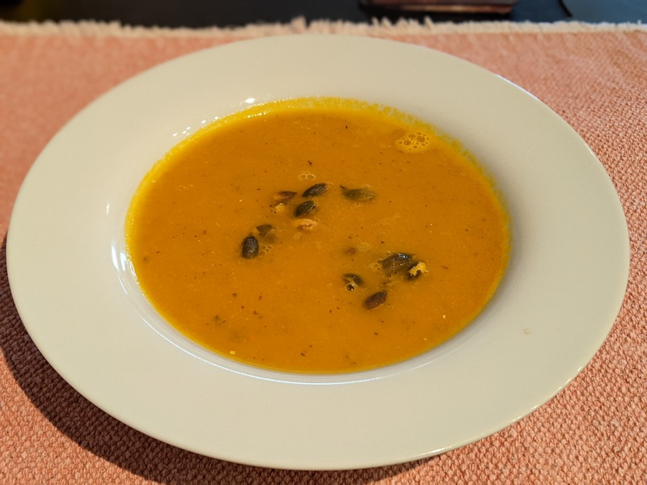

Pokud hledáte nějaký “trik”, jak do svého jídelníčku nenápadně vpašovat více ne příliš populárních luštěnin, tato polévka je mým tajným tipem! Můžete ji vyzkoušet i tehdy, pokud už vás klasické dýňové krémy nebaví a toužíte po nějaké inovaci ;-) Zdrojem receptu mi byl nedávno zmiňovaný Bioabecedář.
- 0,5kg očištěné dýně Hokkaido
- 150g červené čočky
- 1 větší cibule
- 3 lžíce ghí
- čerstvé bylinky - 2 hrsti tymiánu a 2 hrsti rozmarýnu(teď v zimě dávám sušené)
- 1 zeleninový biobujón
- 1,5l horké vody nebo vývaru
- sůl dle chuti
- česnek a citronová šťáva na dochucení
- dýňová semínka a smetana k podávání
Omytou a vydlabanou dýni a oloupanou cibuli nakrájíme na větší kostky. Na přepuštěném másle smažíme cibulku 7-10 minut, poté k ní přidáme česnek a opranou čočku a mícháme. Nakonec přidáme kostky dýně a zalijeme vroucí vodou nebo vývarem. Přivedeme k varu, přidáme bylinky a vaříme, dokud není dýně měkká. Poté rozmixujeme ponorným mixérem. Servírujeme s opraženými dýňovými semínky, můžeme přidat smetanu.
